최신 기술 체험과 적용 실습
강사 화면을 보면서 이 페이지에서 같은 단계를 따라 해 주세요. 끝낸 단계는 체크하면 위쪽 진행 막대에 반영됩니다. 체크 기록은 지금 쓰는 브라우저에만 남습니다.
강사용 화면입니다. 이 화면을 띄우고 진행하세요. ‘📡 진행 공유’가 켜져 있으면 강사가 고른 단계와 타이머가 연수생 화면에 실시간으로 전달됩니다. 강사 메모(점선 상자)는 연수생에게 보이지 않으며, 화면에 띄울 때 감추려면 위쪽 ‘강사 메모 숨기기’를 누르세요.
강사 손우재 · 경남권역 명진초
- 위쪽 📱 참여 QR을 띄워 연수생이 휴대폰·노트북으로 연수생 화면에 들어오게 합니다.
- 아래 ‘시작 전 준비’ 세 가지(Google 로그인 Chrome, 번역기 탭, 이어폰)를 함께 확인하고 시작합니다.
- 진행 순서: 01 이미지(Quick, Draw! 5분 · Say What You See 5분) → 02 음악(Blob Opera 2분+5분, Gemini·Canva) → 03 글쓰기(다음 토큰 체험) → 실습 30초 미래 뉴스(40분) → 마무리
학습목표
- 원리 설명하기이미지·음악·글쓰기 생성 AI 각각의 작동 원리를 설명할 수 있다.
- 체험하고 만들기세 가지 AI 창작 도구를 직접 체험하여, 학생의 발달 수준과 교과 특성에 맞게 활용 가능한 산출물을 제작할 수 있다.
시작 전 준비
체크리스트그림으로 표현하기
AI가 그림을 어떻게 ‘배우는지’ 먼저 확인하고, 이어서 글로 그림을 ‘만드는’ 과정을 체험합니다.
AI의 이미지 ‘학습’ 과정
원리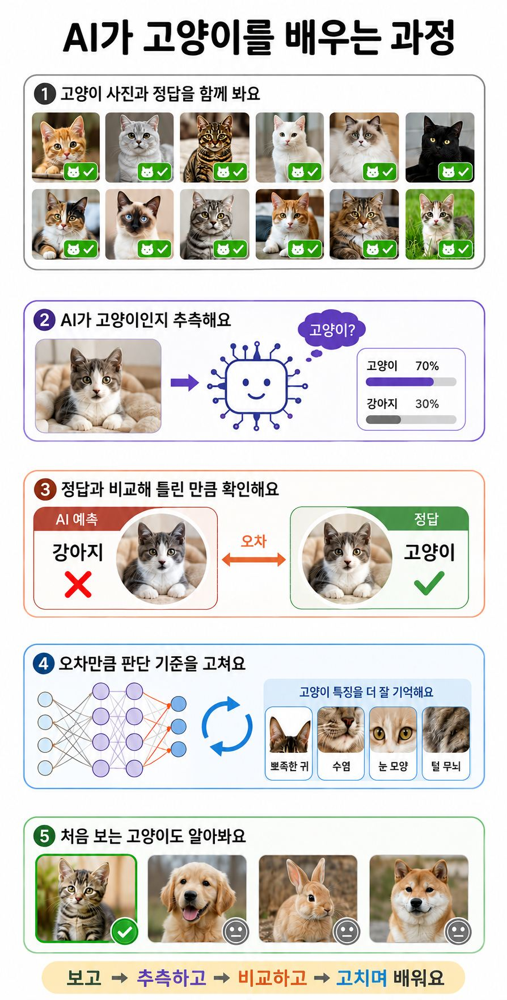
- 예시 모으기‘고양이’라는 이름이 붙은 사진을 아주 많이 모아요.
- 특징 찾기뾰족한 귀, 수염, 눈 모양처럼 반복되는 특징을 찾아요.
- 비교하고 예측하기새 사진이 들어오면 배운 특징과 비교해 ‘고양이일 확률’을 계산해요.
- 틀리면 고치기강아지를 고양이라고 하면, 기준을 조금씩 고쳐 다시 배워요.
학습 = 정답이 붙은 예시에서 공통 특징을 찾고, 틀리면 기준을 고치는 과정
체험 ① Quick, Draw!
개별 5분제시된 낱말을 20초 안에 그리면 AI가 무엇인지 맞힙니다. 사람들이 그린 수많은 그림을 정답 이름이 붙은 학습 데이터로 모아, 선의 모양·위치·그리는 순서 같은 공통 특징을 학습했습니다.
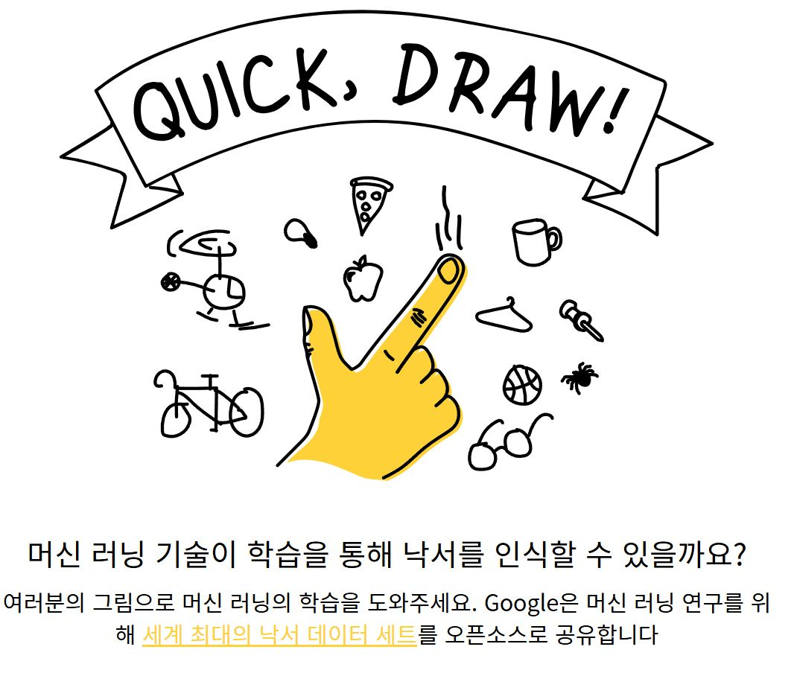
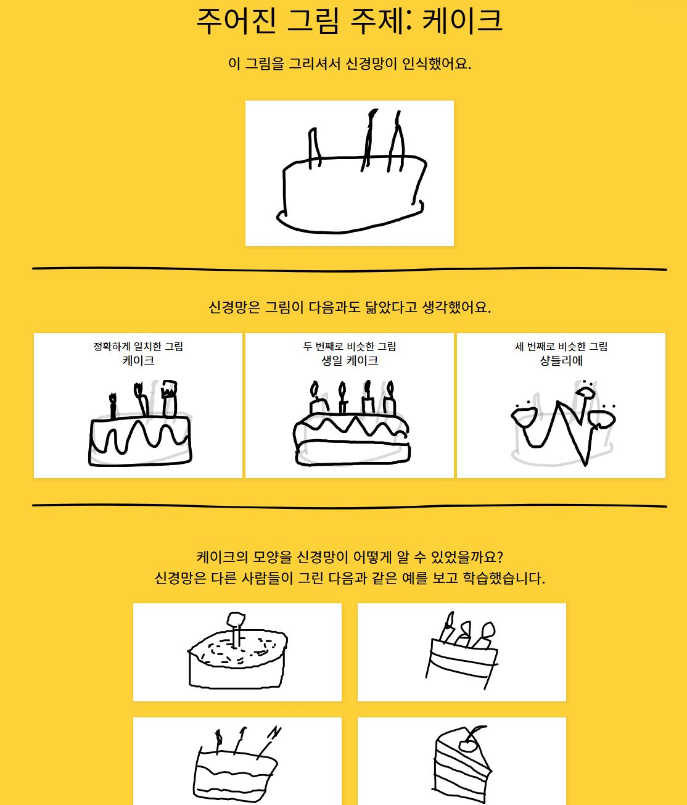
- 활동 뒤 발문: “AI가 못 맞힌 그림은 왜 그랬을까요?” → 다른 사람들의 그림(학습 데이터)과 비교하며 ‘학습 = 공통 특징 찾기’로 연결합니다.
- AutoDraw를 함께 보여 주면 같은 학습 데이터가 ‘그림 추천’에도 쓰인다는 점을 짚을 수 있습니다.
Quick, Draw!와 AutoDraw는 어떻게 연결되나요?
- 낙서 데이터 수집전 세계 이용자가 그린 낙서의 스트로크(선 긋는 순서, 방향, 속도)를 모읍니다.
- 특징 추출·학습순환신경망(RNN)과 CNN으로 사물마다 공통적인 형태를 학습합니다.
- 실시간 예측AutoDraw에서 그리기 시작하면 학습된 데이터로 형태를 추론해 후보를 보여 줍니다.
- 아이콘으로 전환가장 비슷한 아티스트의 정돈된 그림을 추천해 완성형 이미지로 바꿉니다.
출처: Quick, Draw! & AutoDraw (Google AI Experiments)
AI의 이미지 ‘생성’ 과정
원리- 글로 입력만들고 싶은 그림을 글로 자세히 입력
- 숫자로 변환문장을 단어별로 살펴 숫자 정보로 바꾸기
- 잡음에서 출발알아볼 수 없는 무작위 점·얼룩
- 조금씩 지우기글의 조건에 맞게 얼룩을 지우며 형태 만들기
- 반복해 다듬기압축된 그림 정보 완성
- 크고 선명하게압축 정보를 큰 이미지로 바꾸기
직접 움직여 보기 · 막대를 오른쪽으로 옮기면 잡음이 한 단계씩 지워지며 그림이 드러납니다.
입력한 글: A painting of a dog in a field · 시각화용 단순 예시로, 실제 확산 모델은 압축된 공간에서 잡음을 예측해 지웁니다.
이미지 AI는 무작위 잡음에서 시작해, 글의 조건에 맞게 잡음을 조금씩 지우며 그림을 만든다.
그림 → ‘고양이’라는 이름
학습한 특징과 비교해 무엇인지 예측
‘들판의 강아지 그림’ → 새로운 그림
학습한 특징으로 그림을 예측해 만듦
AI의 결과는 ‘정답’이 아니라, 학습한 데이터로 볼 때 확률이 가장 높은 ‘예측’입니다.
- 막대를 천천히 움직이거나 ‘자동 재생’으로 잡음이 걷히는 과정을 보여 준 뒤, 아래 분류(Quick, Draw!)와 생성(이미지 생성 AI)의 차이를 비교합니다.
체험 ② Say What You See
개별 5분구글 AI가 만든 이미지를 관찰하고, 같은 그림이 나오도록 말로 설명하며 프롬프트 쓰기를 연습하는 사이트입니다. Level 1은 문제 이미지와 내 이미지가 50% 일치하면 통과하고, 레벨이 오를수록 기준이 높아집니다.
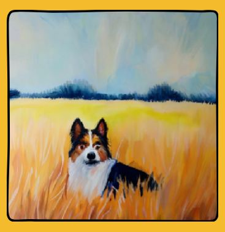
관찰 포인트
정답 프롬프트 보기 (강사용)
A painting of a dog in a field
a painting(그림) · a dog(강아지) · in a field(들판에서). 8개의 낱말로 만들어졌습니다.
활동 순서
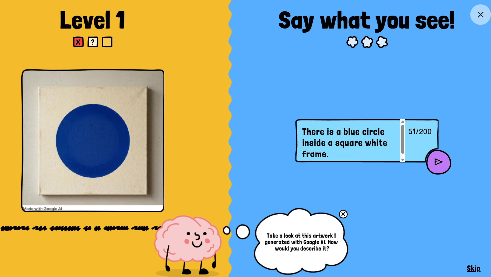
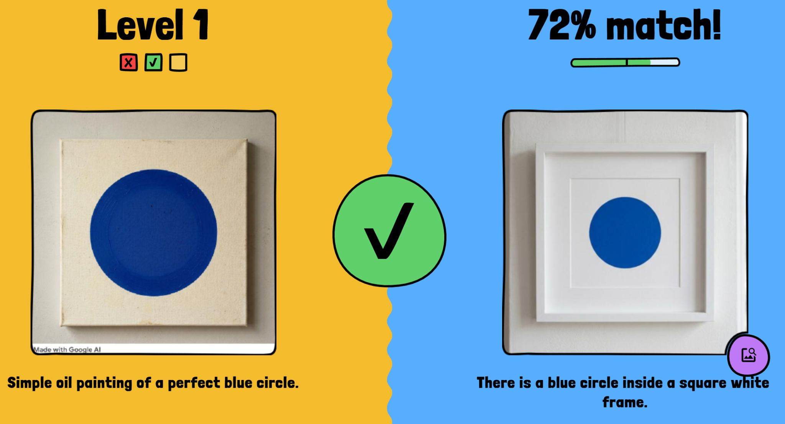
- 정답 프롬프트는 연수생 화면에 나오지 않습니다. 활동을 마친 뒤 이 화면에서 공개하세요.
- 영어만 지원하므로 번역기 탭을 미리 열어 두었는지 확인합니다.
출처: Google Arts and Culture, Say What You See
소리로 표현하기
소리의 특징을 탐구하고, 그림과 소리를 연결한 뒤, 그림과 음악으로 함께 창작하는 초등 수업 흐름을 그대로 체험합니다.
수업 흐름
한눈에 보기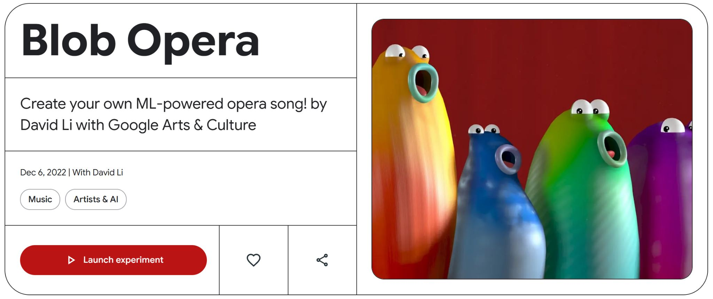
음높이·음색·화음의 변화를 듣고 비교하기
작품의 색·형태·감정과 소리의 관계 탐색하기
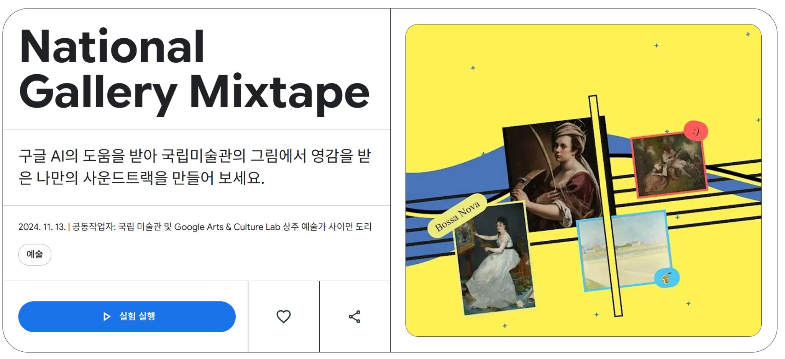
그림을 골라 순서와 소리 크기로 음악 구성하기
AI의 소리 ‘학습 및 생성’ 과정
원리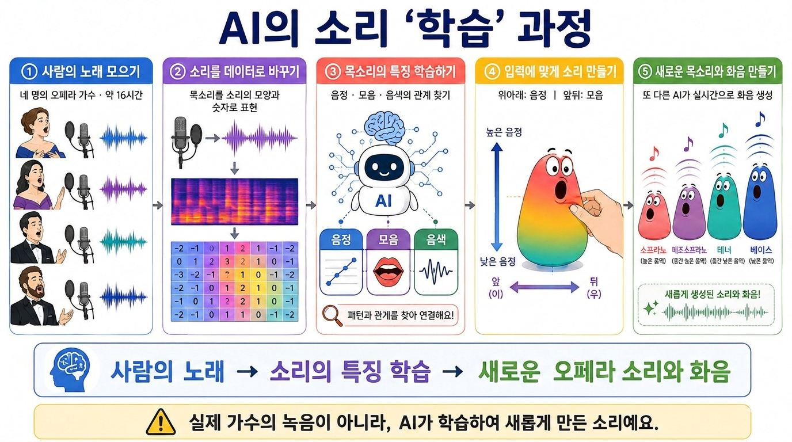
- 학습 자료성악가 4명의 노래 16시간 (소프라노·메조소프라노·테너·베이스)
- 소리 생성노랫소리 특징을 학습한 모델이 음높이·모음에 맞춰 새 목소리를 만듦
- 화음 생성또 다른 머신러닝 모델이 내 입력에 반응해 어울리는 화음을 실시간으로 만듦
실제 가수의 녹음이 아니라, AI가 학습하여 새롭게 만든 소리예요.
[영상 1] Blob Opera 공연 보기 ↗체험 ① Blob Opera
자유 탐색 2분 → 개별 5분블롭을 끌어 움직이면 AI가 그 위치에 맞는 목소리를 바로 만들어 냅니다.
- 소리가 나는 활동입니다. 이어폰을 확인하고, 2분 자유 탐색 → 5분 개별 활동 순서로 타이머를 씁니다.
- ‘실제 가수의 녹음이 아니라 AI가 학습해 새로 만든 소리’라는 점을 한 번 더 짚어 줍니다.
Blob Opera로 수업하기
블롭을 위아래로 움직이며 높낮이 변화를 듣고 짧은 가락 표현하기
모음을 바꾸어 소리의 색깔 비교하기, 네 성부 목소리의 특징 구별하기
성부를 음소거하거나 다시 켜며 한 성부와 여러 성부를 비교하기
활동 순서
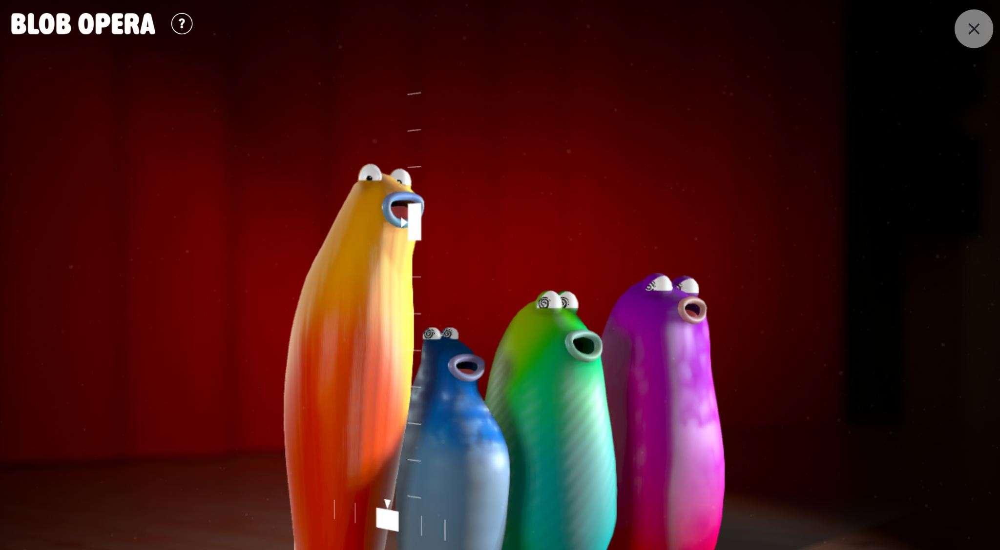
체험 ② Play a Kandinsky
이미지와 소리의 관계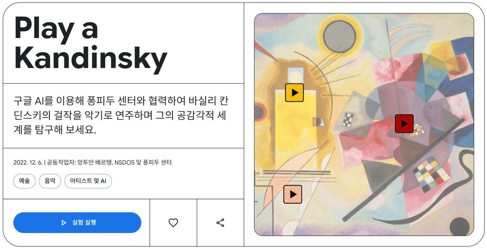
확인할 것
- 작품의 색·형태와 연결된 소리
- 색·형태에 담긴 감정
학생에게 함께 안내해 주세요. 칸딘스키가 실제로 들은 소리가 아니라, 그의 글과 이론을 바탕으로 만든 예술적 해석이에요.
Gemini 음악 생성 따라하기
실습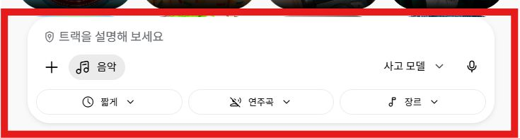
- Gemini 무료 버전의 음악 생성(30초) 가능 여부는 바뀔 수 있으니 연수 전에 직접 한 번 생성해 확인해 두세요.
- 시화가 없는 연수생은 왼쪽 예시 이미지를 저장해 첨부하도록 안내합니다.
학생 계정 사용과 무료 버전 안내
- 현재 Gemini 무료 버전에서 30초 음악을 생성할 수 있습니다. 이후 바뀔 수 있으니 수업 전에 확인해 주세요.
- 학교에서 발급한 Google Workspace for Education 계정이면 초등학생도 사용할 수 있습니다. 구글이 초등학생 활용을 명시하고 있고, 학생의 응답을 AI 재학습에 쓰지 않으며, 답변을 한 번 더 검토해 할루시네이션을 줄입니다.
- 학생이 직접 쓸 수 없다면 학생이 분위기·장르를 말하고 교사가 대신 생성합니다.
Canva에 음악 넣어 작품 완성하기
실습Gemini에서 저장한 mp3를 Canva 실습 페이지에 올려, 그림과 음악이 함께 나오는 작품을 만들어 봅니다.
실제 수업 사례
참고‘마법 소녀’ 작품 등 학생 결과물 모음
Canva에서 보기 ↗- 모둠에서 웹툰 스토리 구성하기
- 장면의 분위기·감정을 이야기하고 Gemini로 음악 생성하기
- Canva에 올려 ‘이미지로 동영상 생성’ 프롬프트 입력하기
- 완성한 음악을 감상하고 그림의 선택·순서·감정과 장면의 관계 설명하기
이야기로 표현하기
글쓰기 AI는 앞의 말을 보고 다음에 올 말을 확률로 고릅니다. 직접 골라 보며 원리를 확인하고, 이어지는 미래 뉴스 실습에서 활용합니다.
AI의 글 ‘학습 및 생성’ 과정
원리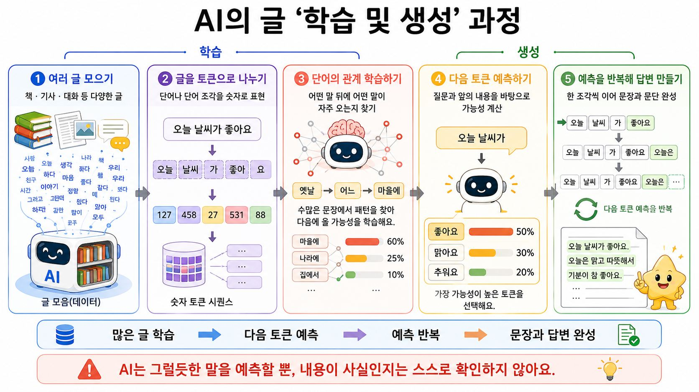
- 여러 글 모으기책·기사·대화 등 다양한 글
- 토큰으로 나누기단어나 단어 조각을 숫자로 표현
- 관계 학습하기어떤 말 뒤에 어떤 말이 자주 오는지 찾기
- 다음 토큰 예측앞의 내용을 바탕으로 가능성 계산
- 예측 반복한 조각씩 이어 문장과 문단 완성
다음에 올 말, 직접 골라 보기
체험앞의 말을 보고, 다음 토큰의 확률을 계산합니다. 후보를 직접 누르거나 아래 버튼을 쓰세요. ※ 원리 설명을 위한 예시 값
- 먼저 ‘가장 높은 확률로 고르기’로 자연스러운 문장을 만든 뒤, ‘바나나’·‘달나라에서’처럼 확률이 낮은 후보를 직접 눌러 어색한 문장이 생기는 모습을 보여 줍니다.
- 이어서 할루시네이션을 설명하고, 미래 뉴스 실습의 ‘근거 확인하기’ 원칙으로 연결합니다.
예측을 반복하면 문장이 됩니다. 그럴듯하지만 사실과 다른 답 = 할루시네이션
AI는 그럴듯한 말을 예측할 뿐, 내용이 사실인지는 스스로 확인하지 않아요. ‘바나나’, ‘달나라에서’처럼 확률이 낮은 말을 골라 보면 어색한 문장이 어떻게 생기는지 볼 수 있습니다.
30초 미래 뉴스, 이렇게 만들어요
글(대본) → 소리(내레이션) → 그림(모션 그래픽)을 차례로 만들고, 마지막에 하나의 영상으로 합칩니다. 실습 시간은 약 40분입니다.
- 대본·자막Gemini · 30초 대사와 SRT
- 내레이션AI Studio TTS · 앵커 목소리
- 모션 그래픽Claude · 그래프·자막바
- 배경음악음악 만들기 · 연주곡
- 편집·완성Clipchamp 등
- 실습은 약 40분입니다. 시작할 때 40분 타이머를 띄워 두세요.
- 1단계에 들어가기 전에 아래 ‘짚고 가기: 가상 뉴스를 만들 때’ 세 가지 원칙을 먼저 안내합니다.
- AI Studio·Claude 메뉴 이름과 요금 정책은 바뀔 수 있으니 연수 전에 화면을 확인해 두세요.
대본·자막 만들기
아래 예시 프롬프트를 참고해 내 수업에 맞는 프롬프트를 직접 써 보세요. 예시에는 수업 맥락 · 상황 설정 · 용도 · 산출물과 분량 네 가지가 모두 들어 있습니다.
지속가능한 발전 주제 수업
30년 뒤 미래에서 온 뉴스, 부산이 물에 잠기는 중
수업 동기유발
대사와 srt, 30초 내외
바꿔 쓰기 Tip · ‘부산’을 우리 지역으로, ‘30년 뒤’를 원하는 연도로 바꾸면 학교별 맞춤 뉴스가 됩니다. 수업 주제와 상황도 내 수업에 맞게 바꿔 보세요.
대사 다듬기와 SRT 확인
다듬기 체크리스트
SRT 파일 구조
- 순번1, 2, 3 … 자막의 순서
- 시간시:분:초,밀리초 --> 끝나는 시간
- 자막화면에 보일 문장 (1~2줄)
- 빈 줄다음 자막과 구분
짚고 가기: 가상 뉴스를 만들 때
원칙영상 시작이나 화면 구석에 ‘가상의 미래 뉴스’ 문구를 넣어 실제 뉴스와 구분해요.
해수면 상승·기온 수치는 IPCC·기상청 자료로 확인하고 과장하지 않아요.
두려움만 남기지 않도록 ‘지금 할 수 있는 행동’으로 마무리해요.
AI가 쓴 대본은 ‘초안’입니다. 교사가 사실과 표현을 검토한 뒤 수업에 사용해요.
출처: IPCC 제6차 평가보고서, 기상청 기후정보포털
AI Studio로 내레이션 만들기
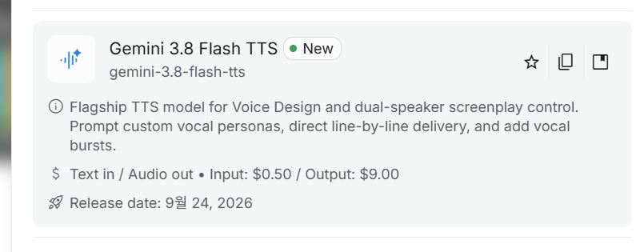
스타일은 목소리의 ‘연출 대본’입니다. 누가(오디오 프로필) · 어디서(장면) · 어떻게(연출 노트) · 무엇을(대본) 말하는지 네 칸으로 나누어 쓰면 원하는 목소리에 가까워집니다. Gemini에게 먼저 초안을 받아도 됩니다.
정보 전달형, 차분한 뉴스 톤
단호하고 또렷한 톤
밝은 톤, 비교 감상용
수업 Tip · 같은 대본을 목소리 2~3개로 들려주고 어울리는 목소리를 고르게 해요.
이럴 땐 이렇게
대사를 한 문장 줄이거나, 연출 노트에 ‘조금 더 빠르게’ 추가
2056년 → ‘이천오십육 년’처럼 한글로 풀어 쓰기
강조할 낱말과 쉼 위치를 연출 노트에 적기
메뉴 이름과 요금 정책은 업데이트에 따라 바뀔 수 있습니다.
Claude로 모션 그래픽 만들기
Claude는 HTML 코드로 움직이는 화면을 만들고, 대화창 옆 미리보기에서 바로 재생해 볼 수 있습니다. 내레이션 음성 파일, SRT 자막 파일, 배경음악 MP3를 첨부하고 아래 프롬프트를 붙여넣으세요. [ 주제 ]는 내 뉴스 주제로 바꿉니다.
하나로 합치기: 편집과 완성
- SRT 자막 파일
- 내레이션 음성(TTS)
- 배경음악
- 내레이션 길이에 장면 맞추기
- 배경음악은 작게
- 시작·끝에 페이드
- 자막 확인 (SRT 불러오기)
- ‘가상 뉴스’ 표기 확인
- 1080p mp4로 저장
Claude로 만든 화면에 자막을 이미 넣었다면 자막 단계는 생략해도 됩니다. 편집 도구 예: Clipchamp(Windows 기본 앱), Canva, CapCut
오늘 체험한 세 가지 AI
세 AI 모두 많은 데이터에서 특징을 학습하고, 그 특징으로 가장 그럴듯한 결과를 예측해 만듭니다. 그래서 결과는 ‘정답’이 아니라 ‘예측’이고, 교사의 검토가 필요합니다.
- 정리 발문: “세 AI의 공통점은 무엇일까요?” → 많은 데이터에서 특징을 학습하고, 가장 그럴듯한 결과를 예측해 만든다.
- 결과는 ‘정답’이 아니라 ‘예측’이므로 수업에 쓰기 전 교사의 검토가 필요하다는 점으로 마무리합니다.
나의 진행 상황
사이트 모음
AIEDAP(AI Education Alliance & Policy lab) 마스터교원 신규 연수 · 영역1 모듈2 · 강사 손우재. 감사합니다.